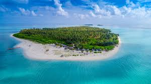
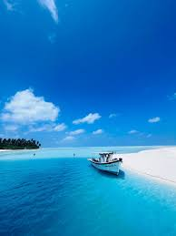
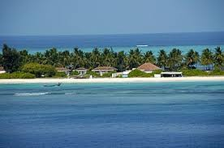

Kavaratti Island

The capital of Lakshadweep, known for its pristine white-sand beaches, lagoons, and the Marine Aquarium, offering excellent opportunities for snorkeling and diving.
Minicoy Island

The southernmost island, known for its distinctive culture, a large lighthouse, and beautiful lagoons, ideal for a quiet getaway.
Agatti Island

Known for being the gateway to Lakshadweep (it has the only airport) and for its stunning coral reefs and lagoons, offering various water sports.
Kadmat Island

A coral island surrounded by a lagoon and rich marine life, making it a perfect spot for water sports like scuba diving, kayaking, and yachting.
Bangaram Atoll

An uninhabited, serene teardrop-shaped island famous for its beautiful coral formations, clear turquoise waters, and as a great spot for relaxation and water activities.